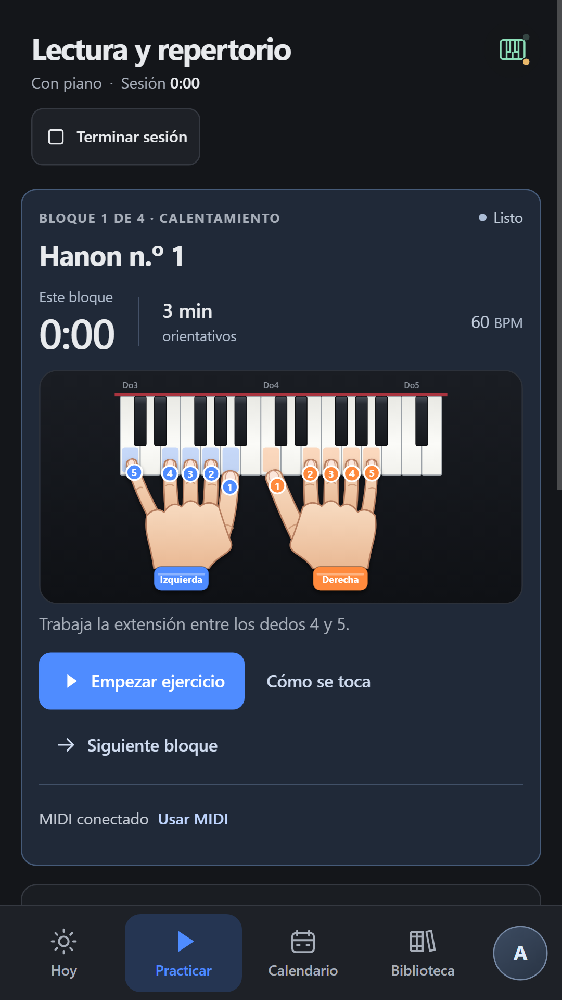
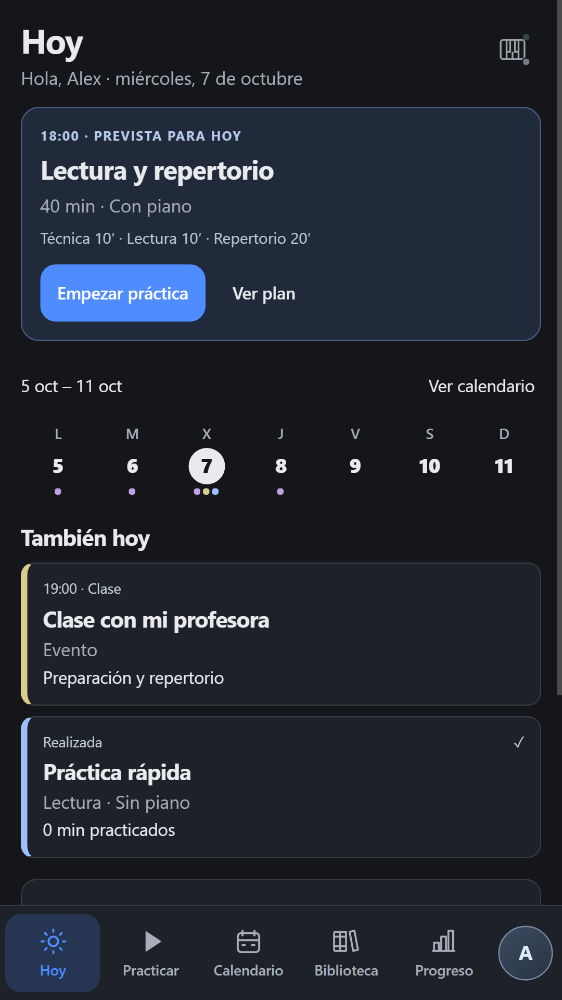
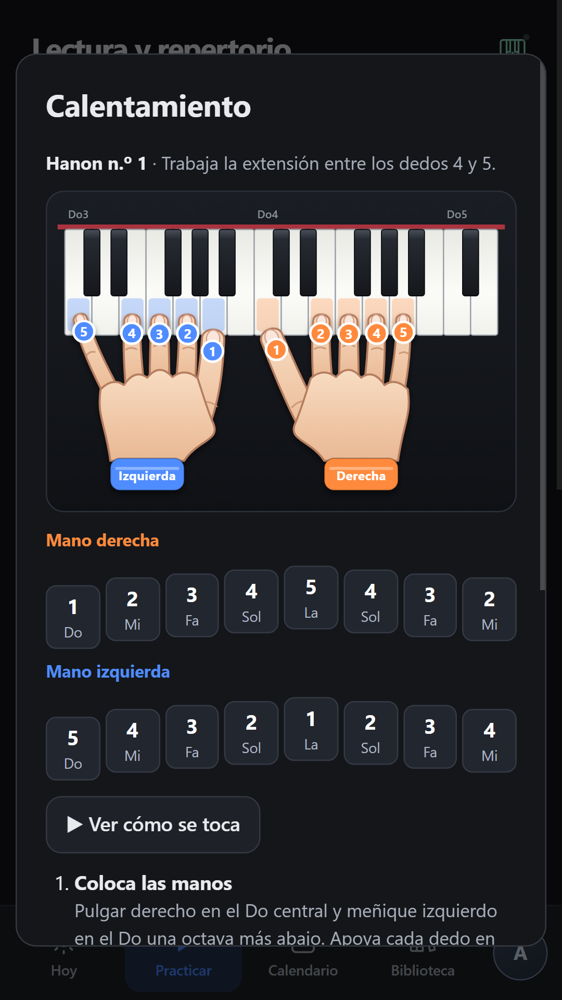
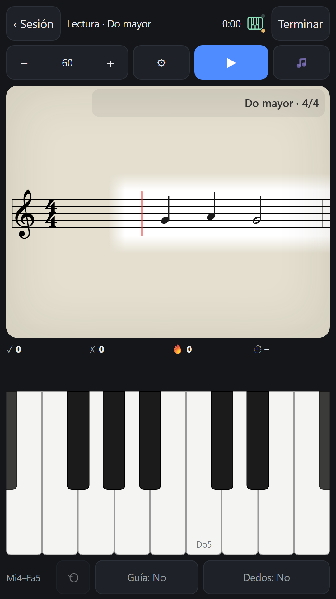
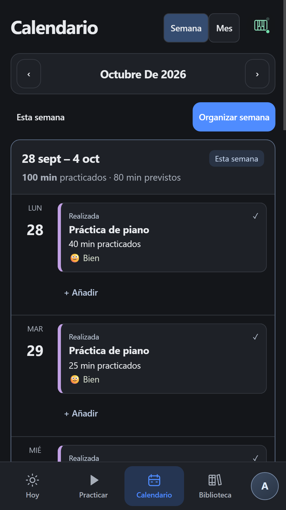
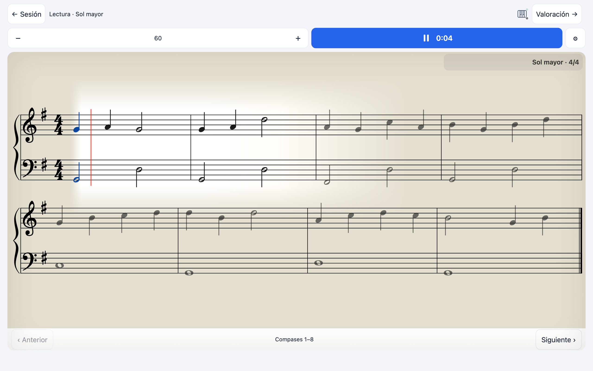

Lectura a primera vista sin fin
Ejercicios nuevos cada vez en la escala que elijas, a una o dos manos. A dos manos, el bajo mantiene un patrón y la melodía cae en notas del acorde.
Planifica qué vas a estudiar, practica con ejercicios que se adaptan a tu nivel y guarda cómo te ha ido cada día. Con un teclado MIDI, con tu piano o, cuando viajas, solo con el móvil.
Próximamente en Google PlayAndroid · gratis · sin anunciosDescargar Spino Test APKVersión de prueba para Android. La versión oficial estará disponible en Google Play.

Ejercicios nuevos cada vez en la escala que elijas, a una o dos manos. A dos manos, el bajo mantiene un patrón y la melodía cae en notas del acorde.
Cada sesión con piano empieza con un ejercicio de El pianista virtuoso, con una guía visual de las manos y una demostración animada.
Conéctalo por USB o Bluetooth: SPino comprueba cada nota, también los acordes. Usa los pedales para pasar página.
Elige tu nivel de pianista y cada práctica ajusta el ritmo y el registro. La mano izquierda avanza a su propio paso.
Hoy, calendario semanal, rutinas, recordatorios e historial con notas y valoración de cada sesión.
Biblioteca de dominio público, tus PDF con anotaciones y lectura por partes en apaisado.





Sin cuentas, sin anuncios y sin servidores propios: tu cuaderno se guarda en tu dispositivo. Si quieres, haz una copia en el archivo que elijas, por ejemplo en Google Drive.
Política de privacidadUn juego musical nacido de Spino: Smart Piano Notebook. Lee notas en movimiento, sigue el ritmo y encadena rachas, con instrumentos con muestras y progresión gradual.